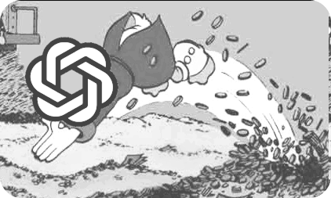

LLMVis
Visualize language models.
Model:
ELIZA
Markov Chain
LSTM
Small Language Model (SLM)
Markov Chain
Roses are red, Violets are blue, I love Hack Club and so should you!
Order:
Seed:
Max Words:
Train Model
Generate Text
ELIZA
Send
LSTM
Shakespeare Mode (Enhanced Model)
Uses larger model and Shakespeare corpus for better results
Training Text:
Roses are red, Violets are blue, I love Hack Club and so should you!
Epochs:
Batch Size:
Sequence Length:
Train Model
Small Language Model (SLM)
Training Text:
Roses are red, Violets are blue, I love Hack Club and so should you! This is a simple test for our small language model. We will train it on this text and see how it learns patterns.
Epochs:
Layers:
Embedding Dim:
Train SLM
Generate Text
Ready to train
×